Fidenne · Public Beta 1 · 0.7.0
Install and use guide
Follow along step by step, with pictures, from the download to your first sound and then to everyday use.
Download — installer (.dmg)Apple silicon Mac · macOS 15 or later · wired USB external DAC recommended
This is still a public beta — some things will change or be fixed.
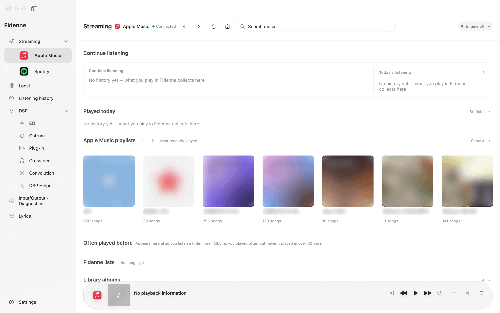
Part 1
Install
Follow these steps from the download to your first sound.
Install 1
How sound travels
In Fidenne you choose the output method, shape the sound with EQ, Ostrum, Crossfeed and filters, and check the route the sound takes in the Playback Chain. Sound travels in this order: playback app → Fidenne → DAC.
- Choose and play music as usual in the Apple Music, Spotify or YouTube Music app (or in a browser). Fidenne sits in between, takes the sound, processes it and passes it to your DAC.
- The Playback Chain shows the route the sound takes and the processing in use. Fidenne does not save the sound or turn it into files.
- You can control the service app you are listening to from Fidenne and see track information and lyrics alongside (playback itself is done by each service app). Play counts and ads stay as they are in each service. Fidenne does not block or skip ads.
Install 2
What you need
We recommend an Apple silicon Mac (M1 or later), macOS 15 or later, and a wired USB external DAC.
- Open the Apple logo in the menu bar › About This Mac. The chip name should start with “Apple M”.
- If macOS is older than 15, the app will not open. Update first in System Settings › Software Update.
- Plug in your external DAC by USB. Sound shaping (EQ and so on) works on a 2-channel DAC that accepts at least one of the PCM rates the engine uses (44.1 to 768 kHz).
With the built-in speakers, the 3.5 mm jack, AirPods or HDMI, Fidenne also sends sound that has had EQ, Ostrum, Crossfeed and filters applied, as PCM. At the very end macOS mixes it through the system mixer, so it is not bit-perfect, and DSD is not available. A device that accepts none of the supported rates (most dongles, for example) plays only in PCM Direct, where you hear the sound untouched.
Install 3
Download
Get the installer (.dmg) from the Releases section of the public Fidenne page.
- On the Releases page (
github.com/fidenne/fidenne/releases), open the newest entry at the top. - Click the file that ends in
.dmg. A.dmgis a disk image, the usual way Mac apps are distributed. The downloaded file normally goes into your Downloads folder. - If the download takes a while, wait until it finishes. If the file will not open or has a different name, check again that you picked the newest entry.
The app is distributed signed and notarized. Do not use files downloaded from anywhere else.
Install 4
Move it to the Applications folder
Open the downloaded disk image and put the app in your Applications folder.
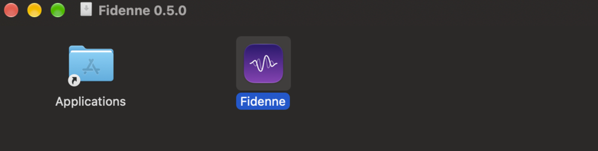
- Double-click the downloaded
.dmg. A small window opens. - Drag the Fidenne icon in that window onto the Applications folder.
- When copying is done, close the window and eject the disk image with the eject (⏏) button in the Finder sidebar.
Keep the app in the Applications folder so that updating is easier later. The extension that lets Safari work with YouTube Music also shows up in Safari only for an app opened from that folder. Do not open the app directly from inside the disk image or from the Downloads folder. If a window says an app with the same name already exists, choose to replace it with the new one.
Install 5
Open it for the first time
Open Fidenne from the Applications folder.
- Because the app came from the internet, macOS asks once whether you want to open it. Click Open.
- If it still does not open, allow Fidenne in System Settings › Privacy & Security.
- If your Mac runs a macOS older than 15, the app will not open at all. Go back to Install 2 and update macOS.
The exact wording of this window differs a little between macOS versions.
Install 6
First-time setup
The first time you open it, the “Fidenne First-Time Setup” window appears and takes you through five steps (shown at the top of the window as 1 / 5 and so on). Use Back and Next to move between steps.
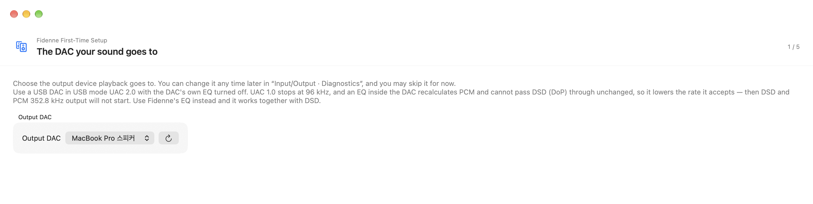
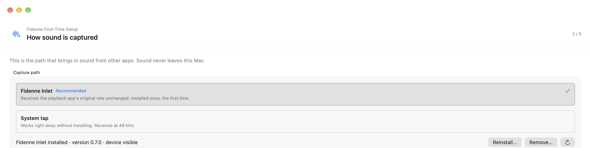
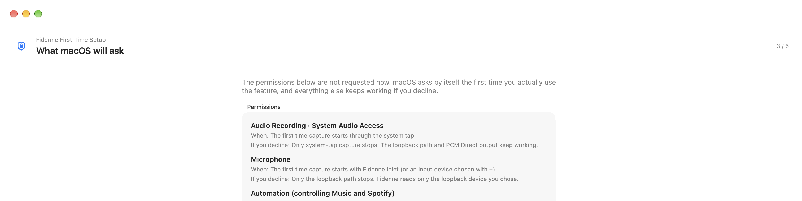
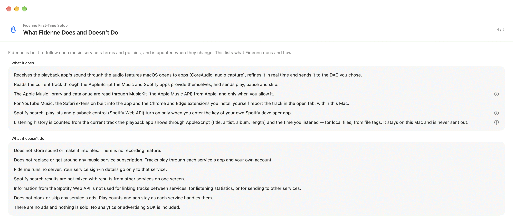
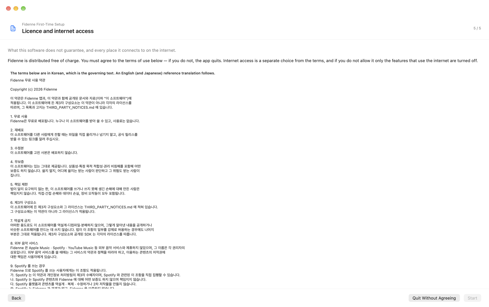
- The DAC your sound goes to — choose your DAC. If you are not sure, leave it on Choose later. If your DAC does not show up, plug it in and refresh.
- How sound is captured — Fidenne Inlet is already selected from the start. It is a virtual device that receives the sound your music app makes exactly as it is, so leave it as it is. If it is not installed, click Install… and enter your administrator password once (all sound is briefly cut at that moment). A virtual audio device such as Inlet is installed separately because macOS only loads it from a system folder. If you would rather not install it, choose System tap (it works without installing, but captures at 48 kHz).
- What macOS will ask — it does not ask now. It asks the first time you use each feature.
- What Fidenne Does and Doesn’t Do — read it and click Next.
- Licence and internet access — below the terms there are four check boxes (Agree to All · [Required] Terms of Use · [Optional] Use features that connect to the internet · [Optional] Diagnostic records for problem reports). You must tick the required box before you can click Start. Playback works even if you leave the optional boxes off. If you do not agree and click Quit, the app closes.
When you finish, the sidebar (the list of pages) and a page appear in the same window. This window does not appear again from the next launch, and you can change your choices later in Settings. If you do not agree to internet access, online features stay off.
Install 7
Permissions
macOS asks for a permission the first time you use the feature that needs it. When the window appears, click Allow.
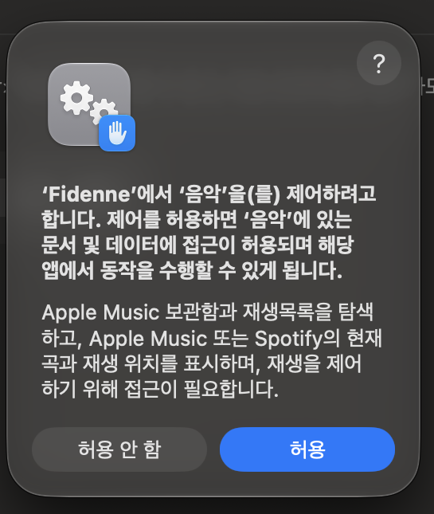
- Audio recording · system audio — when capturing sound made by other apps. The word “recording” is part of the name, but Fidenne does not save the sound.
- Microphone — when capturing through an input device such as Fidenne Inlet. Nothing is saved or sent out.
- Automation — to read what is playing now in Apple Music and Spotify and to send play and pause.
- Apple Music library — to read your library.
If you declined by mistake, turn Fidenne back on for that item in System Settings › Privacy & Security. If you use the app without allowing it, sound may not come in or track information may not show.
Install 8
Turn the volume down before the first play
When you press play for the first time, this window appears before any sound.
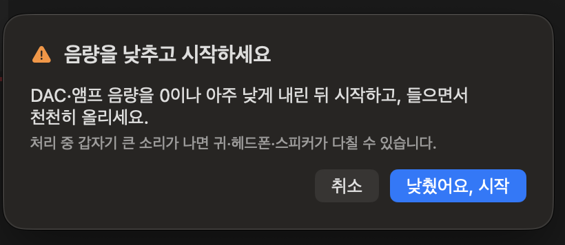
- Turn the volume on your DAC or amp down to 0 or very low.
- Click I turned it down, start. If you click Cancel, nothing starts.
- Raise the volume slowly while you listen.
It appears once at the first play each time you launch the app, and once more with a DAC you are using with this app for the first time. The first sound can be suddenly loud, so this protects your ears and your equipment. If you press play and nothing happens, check whether this window is behind another window.
Install 9
When you get stuck
If there is no sound or it sounds wrong, look up your symptom in the Troubleshooting guide. The most common one, “no sound”, is the first entry.
- If that does not solve it, make a support file from the app’s Diagnostics menu › Export Diagnostics for Support…. Before sending, it shows you on screen what the file contains.
- Send an email to fidenne.support@gmail.com. The app never sends anything for you, so whether to send it is up to you.
If you have a GitHub account you may also write an issue, but send the diagnostics file by email only. Do not post it in an issue.
Install 10 · Optional
Connect Spotify ① Create your own app
You do not have to do this. If you pick a track in the Spotify app, Fidenne shapes the sound and shows what is playing, with no key. Do it only if you want to use Spotify search, playlists and playback control inside Fidenne. Fidenne does not ship with a Spotify key, so you create the key of your own Spotify developer app. Log in with the Spotify account you normally use.
- In your browser, open
developer.spotify.comand click Log in. You can also open it from the dot next to Spotify on Fidenne’s Streaming page › Open Developer Dashboard.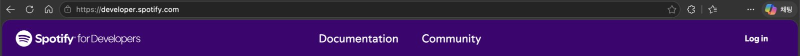
- After logging in, click your account name button and choose Dashboard from the menu.
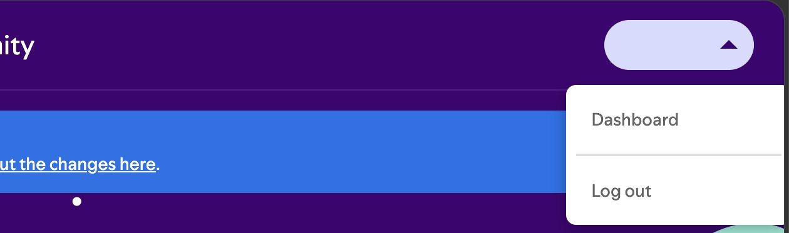
- On the Dashboard page, click Create app.
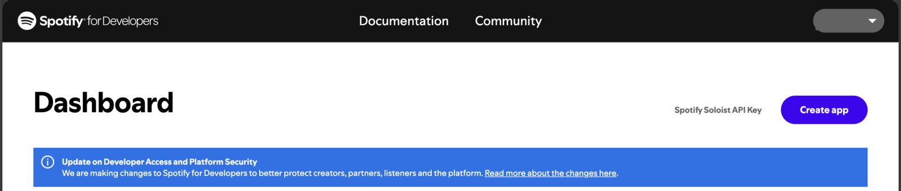
- Enter anything for App name and App description. In the Redirect URIs field, paste the address shown in Fidenne,
http://127.0.0.1:53682/callback(use the Copy button in Fidenne), and click Add. Under Which API/SDKs are you planning to use?, tick Web API. Leave the Website field empty.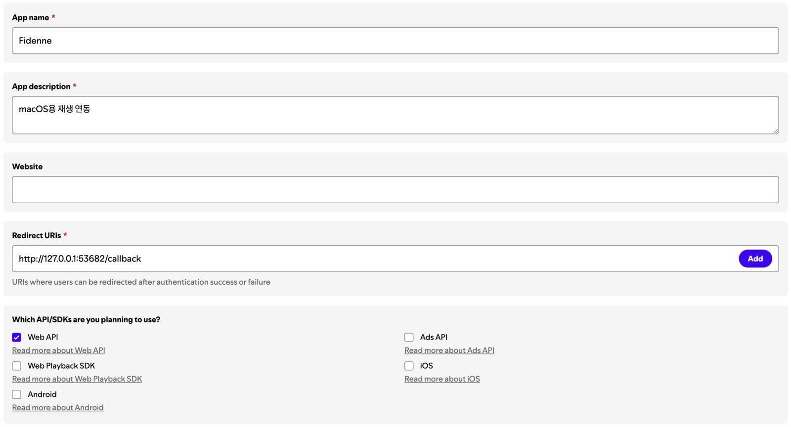
- Tick the terms box (I understand and agree with Spotify's Developer Terms of Service and Design Guidelines) and click Save.
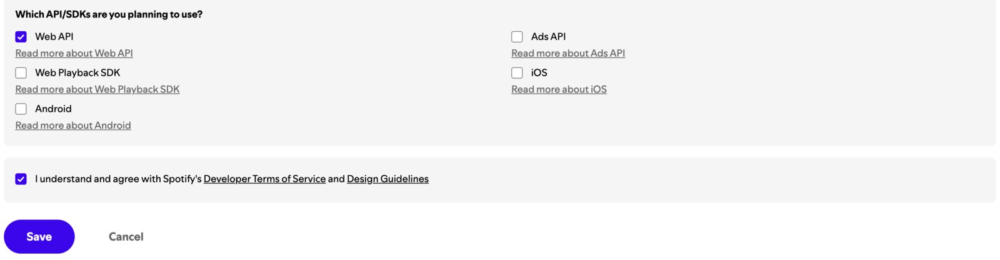
What you agree to here are the Spotify developer terms. You agree to them yourself, and Spotify sets those terms. Button names and layout on the site may change.
Install 11 · Optional
Connect Spotify ② Enter the key
Paste the Client ID of the app you created into Fidenne’s field. The Client ID is all you need. The dashboard also shows a Client Secret, but Fidenne does not use it, so there is no field for it. It is like a password, so do not tell anyone. If you paste the whole dashboard address, Fidenne reads the ID from it.
- After you Save, the Basic Information page of your app opens. Click the copy button at the end of the Client ID field.
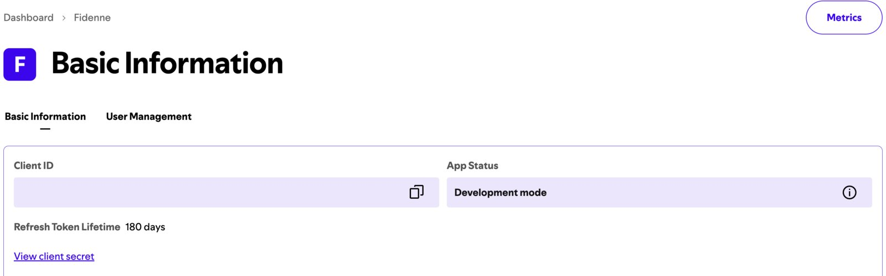
- Paste it into the Spotify connection field on Fidenne’s Streaming page and click Check Key to see whether the format is right. If it points out the length or a character that is not allowed, check whether a space at the start or end came along when you copied. If it is right, click Connect Spotify.
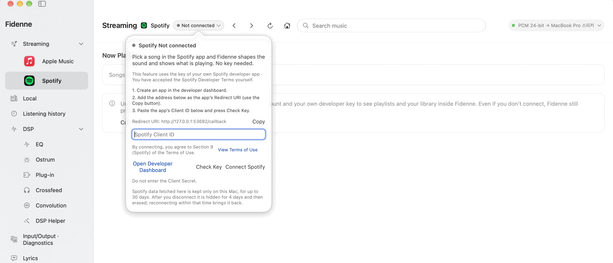
- The Spotify consent page appears in your browser. Check the name of the app you created and click the agree button.
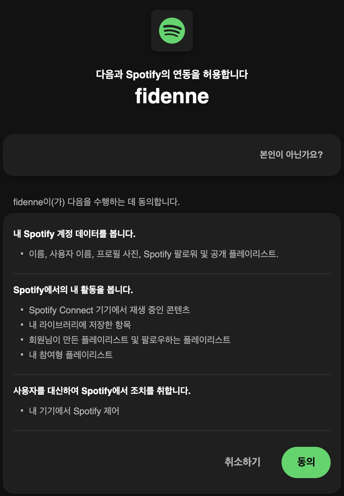
- When you see a message that Spotify’s sign-in response was received and asks you to go back to Fidenne to check the result, the connection is done. Close this tab and return to Fidenne.
Controlling Spotify playback (play, pause, skip) requires Spotify Premium. If you make too many requests, Spotify asks you to wait for a while. The connection stays, and you can try again after the time shown. After connecting, Renew Playback Permission and Disconnect appear in the settings.
Install 12 · Optional
YouTube Music
This is an experimental feature, so it is off at first. YouTube Music has no Mac app, so you listen in Safari, Chrome or Edge, and Fidenne gets track information and controls playback through a browser extension (a small program you add to the browser). The sound is captured by Fidenne Inlet as usual. If you connect several browsers, Fidenne follows the browser where you started playback yourself. The Safari extension is built into the app, so there is no file to install.
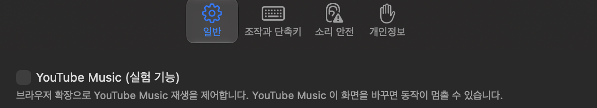
- Turn on YouTube Music with the switch at the top of Settings › General.
- To use Chrome or Edge, turn on Settings › Privacy › Connect to browser extension (Safari · Chrome · Edge). If you only use Safari, you do not need this switch; go to Turn it on in Safari below.
- For Chrome and Edge, click Installation Guide… in the same place to open the extension install window. Keep this window open while you follow the next steps.
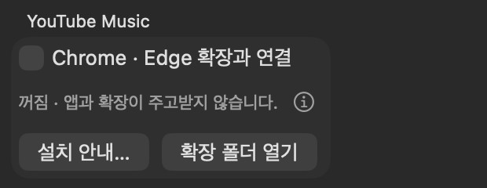
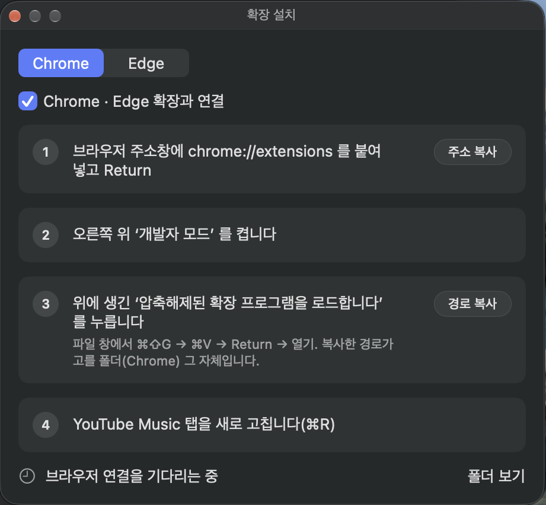
Install the extension in Chrome
- Type
chrome://extensionsin the Chrome address bar and press Return (Copy Address in the install window). Turn on the Developer mode switch and three buttons appear.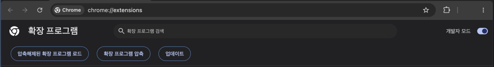
- Click Load unpacked. A window opens for choosing a folder.
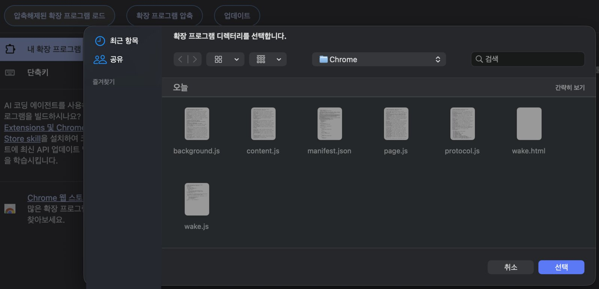
- In that window press ⌘⇧G, paste the path you copied with Copy Path in the install window, and press Return.
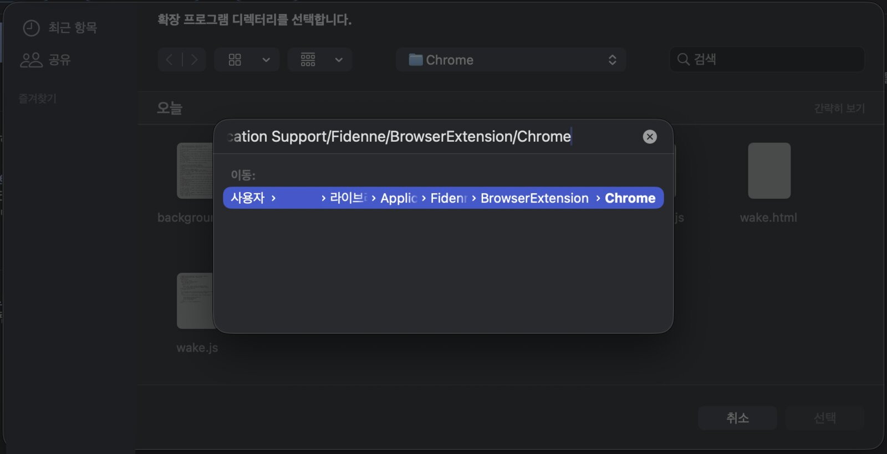
- When the folder name changes to Chrome, click Select.
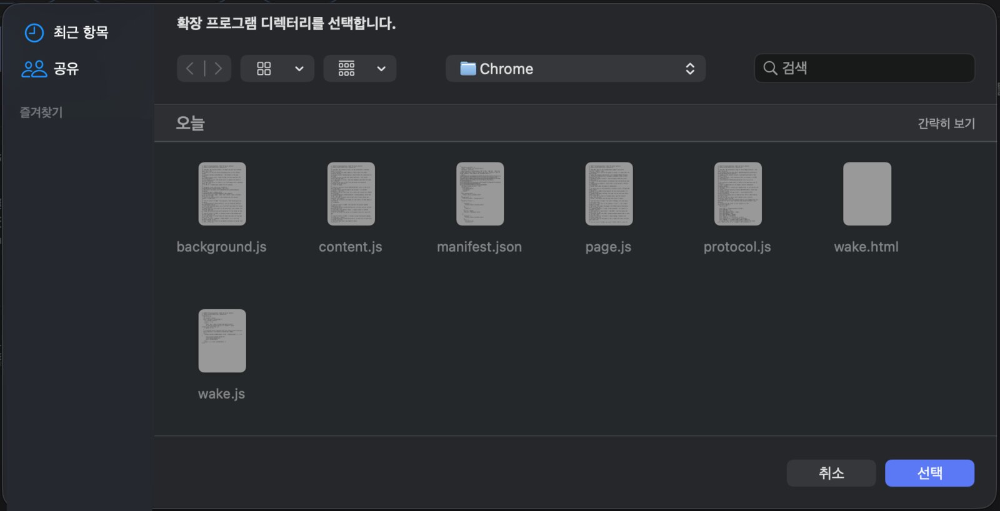
- When Fidenne for YouTube Music appears in the extension list, the installation is done. The version number may differ.
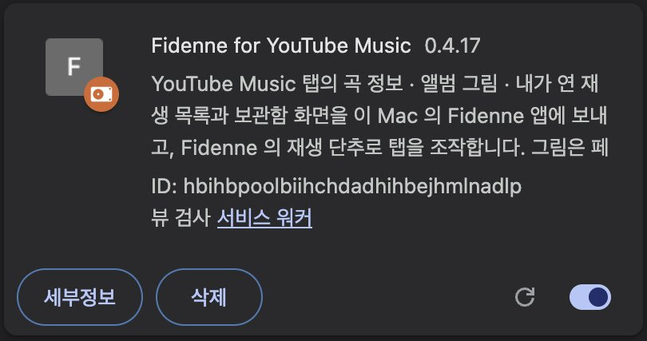
- Reload any open YouTube Music tab (⌘R).
Install the extension in Edge
The steps are the same as in Chrome; only the names differ.
- Type
edge://extensionsin the Edge address bar and press Return.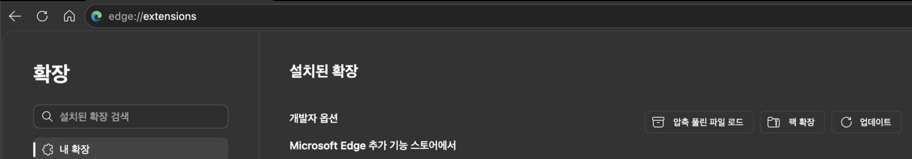
- Turn on the Developer mode switch at the bottom of the sidebar.
- Click Load unpacked, press ⌘⇧G in the window that opens, paste the path you copied with Copy Path, press Return, and then click Select.
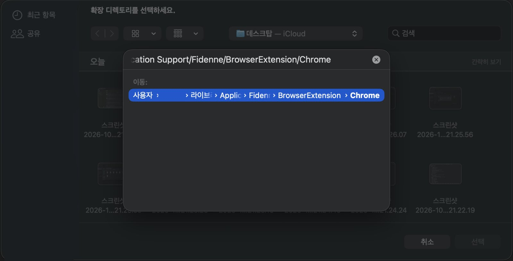
- When Fidenne for YouTube Music appears under Other sources, you are done. Reload any open YouTube Music tab (⌘R).
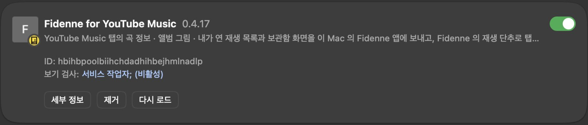
Turn it on in Safari
Do this after turning on YouTube Music in step 1 above. Safari 18.4 or later is required.
- Check that Fidenne is open from the Applications folder. If you opened the app from the Downloads folder or from inside the disk image, Settings › Privacy › YouTube Music shows “The Safari extension appears in Safari only after you move Fidenne to the Applications folder and open it again.” Quit Fidenne, move it to the Applications folder, and open it again from there.
- Click Open Safari Settings in the same place. When Safari’s extension settings open, turn on Fidenne’s YouTube Music extension. If only Safari opens, turn it on in Safari › Settings › Extensions.
- Open music.youtube.com, click the Fidenne icon in the row of extension icons next to the address bar, and allow it on this website (Always Allow). Reload that tab (⌘R).
When you play a track on music.youtube.com and it shows in the bar at the bottom, the connection works. If it does not show, check in Safari › Settings › Extensions that the Fidenne extension is on, and in Safari › Settings › Websites that music.youtube.com is set to allow. If the bar stops after you update the app, reload that tab once.
Keep the tab from falling asleep
If the browser puts an unused tab to sleep, YouTube Music cannot respond. Add music.youtube.com to the exceptions. In Chrome it is Settings › Performance › Memory Saver › Always keep these sites active. In Edge it is Settings › System and performance › Optimize Performance › Never put these sites to sleep. Safari has no per-site sleep exception. A tab that is playing sound is not put to sleep, but if a tab left paused for a long time or the extension falls asleep and the bar stops, reload that tab once (⌘R).
Import playlists
With the extension connected, opening a playlist page in YouTube Music adds it automatically. Or you can import a Google Takeout (download your data) file. The collected lists gather under Streaming › YouTube Music › My playlists.
In Chrome and Edge, the connection is made when the bottom line of the install window changes to “1 browser connected”. The extension is not in the web store yet, so you install it only in developer mode, and you install it in one browser only. In Safari, the connection is made when a track you play on music.youtube.com shows in the bar at the bottom. After you update the app, press reload (↻, or Reload in Edge) for the Fidenne extension once on the extensions page. If the YouTube Music page changes, it may stop working. That is what “experimental feature” means.
Part 2
Use
This part goes in the order choose a device → connect a service → play. The screens are shown in English. ⌘ in ⌘1, ⌘4 and ⌘5 is the Command key on your keyboard; these keys open a sidebar page directly.
Use 1
Choose the DAC your sound goes to
In the sidebar’s Input/Output · Diagnostics (⌘5), choose the output DAC and the output method.

- Under Output DAC, choose your DAC. If it does not show, plug it in and click refresh (↻).
- Under Output method, choose one of the three.
- PCM Direct
- Fidenne does not touch the sound, and macOS sends it to the DAC. Sound shaping is off. It is the simplest and works with any device.
- DSD (DoP)
- This is the starting value (until DSD is confirmed on that DAC, it starts in PCM Direct). The engine sends sound through the filter and the DSD conversion. The DAC must accept DSD.
- PCM oversampling
- The engine sends the processed sound as integer PCM. It suits DACs that do not know DSD. Choose the output rate under PCM in Advanced from the supported rates of 44.1 to 768 kHz; the default for new settings is to keep the source rate.
Sound shaping works on a 2-channel DAC that accepts at least one supported rate between 44.1 and 768 kHz. Other devices get “· PCM Direct only” after their name in the list. The built-in speakers, the 3.5 mm jack, AirPods and HDMI do not show this label; Fidenne processes the sound and sends it, and at the very end macOS mixes it through the system mixer (DSD is locked). If you start in DSD and hear loud hissing or crackling, it stops at once and switches to PCM oversampling. That DAC cannot decode DSD (DoP). The first time you send DSD to a DAC you are using with this app for the first time, a confirmation window appears once.
Use 2
Turn the volume down first
The first time you play after launching the app, the volume notice window appears. Turn the volume down, click I turned it down, start, and then raise it slowly.
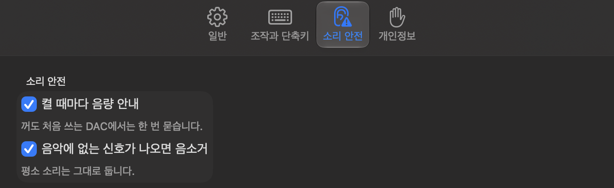
- To turn the notice window off, turn off “Volume reminder each time it’s turned on” in Settings › Sound safety.
- Even with it off, you are asked once with a DAC you are using with this app for the first time.
When you switch to PCM Direct, the engine’s safe headroom is not applied, so check the DAC volume before you switch.
Use 3
Connect a service
Choose a service under Streaming in the sidebar. They are Apple Music, Spotify, and YouTube Music if you have turned it on (YouTube Music shows only when you turned it on in Settings › General). When you click a service, the page header shows the service name and its connection state (● Connected · Not connected · Needs attention).
- Apple Music — the first time you use it, macOS asks two things: whether Fidenne may control the Music app, and whether it may read your Apple Music library. Click Allow for both. Even if you do not allow reading the library, Fidenne reads it through the Music app. The ● Connected in the header is only an indicator, not a button. If you missed the prompt, turn on Music for Fidenne in System Settings › Privacy & Security › Automation.
- Spotify — you do not have to. If you pick a track in the Spotify app, Fidenne shapes the sound and shows the current track with no key. To use search, playlists and playback control inside Fidenne, click the Spotify status pill in the header, enter your Client ID in the window that opens, and click Connect Spotify (Install 10 and 11). After connecting, the same window gets Renew Playback Permission, Follow Spotify queue and Disconnect.
- YouTube Music — turn it on in Settings › General and follow Install 12. It works in Safari, Chrome and Edge. Clicking the status pill in the header opens a window to choose the browser to connect with.
- Turn on the engine — to make the sound pass through Fidenne, click the Playback Chain pill at the end of the header (for example ● Engine off ⌄) and turn on the Engine switch at the top of the window that opens. The engine switch does not play a track. Play tracks from the service app or with the play button in the bottom bar. What plays when you turn the engine on is chosen under After the engine starts on the Input/Output · Diagnostics page.
If you control Apple Music playback from Fidenne — turn these off in the Music app
- Autoplay (∞) — the ∞ button above Up Next in Music. It picks tracks only after the Fidenne list ends.
- Shuffle · repeat — turn them off in Music and, if you need them, use shuffle and repeat in the Fidenne bar.
- Track transitions (AutoMix · Crossfade) — Music › Settings › Playback. When tracks overlap, the moment a track changes becomes blurred, and skipping tracks and matching rates can go wrong.
- We also recommend turning off Sound Check · Equalizer · Sound Enhancer, which change the sound first. They change the sound before Fidenne shapes it.
Fidenne has no feature that replaces a service subscription. Tracks always play in each service’s app with your own account. If the sound passes through Fidenne but you cannot hear it, check that the input and output on the Input/Output page are the ones you chose.
Use 4
The playback capsule at the bottom
This is the bar that always floats at the bottom of the window. It is one line and the same height whether the window is wide or narrow. From the front, in order:
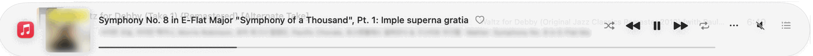
- Service icon — the app that is making the sound now. Only the icon shows, without a name; the name appears when you hover the pointer over it. Click it to open the current track in that service (in a browser tab for YouTube Music).
- Album cover — click it to open the large playback screen (Album mode). Press Esc, click close (×), or click the cover again to close it.
- Track — the title, with the artist · album under it. The heart right after the title adds it to Liked Songs (library), which is managed by Fidenne and exclusive to Fidenne. It is separate from the likes in a service app.
- Shuffle · previous · play/pause · next · repeat — shuffle and repeat work only on a list you played from Fidenne.
- Playback position — the thin line laid under the track and the play buttons. Click or drag it to move. When you hover the pointer, the line gets thicker, the text right above it fades, and the current time and the time left appear above both ends of the line.
- ⋯ — the menu for the current track. Depending on the track you see Play Next · Add to End of Queue (while playing a Fidenne list) · Add to Playlist · Show Lyrics · Track Info · Open in Another App, and at the very end Sleep Timer and Output Settings… (the output settings on the Input/Output page).
- Volume (speaker) — click to mute and click again to restore. When you hover the pointer, a volume bar appears above it, and you can also swipe up and down to change it. This button reads and changes the volume of the DAC itself. On a DAC that is adjusted only with its own knob, it looks dimmed, and hovering shows the reason.
- Play Next (list-shaped) — opens and closes the Play Next and lyrics panel.
If you narrow the window a lot, the cover becomes a square, and if you narrow it more, shuffle and repeat leave the bar and move into the ⋯ menu.
The engine switch and the output method are in the header, not in the bar
- The Playback Chain pill at the end of the page header shows “app → output method → DAC” (for example PCM 24-bit), and its dot is the engine state (green on, gray off, red error). When the engine is off it reads “Engine off”.
- Click it and a window opens. It has the Engine switch at the top, under it Output settings (choose a recommended preset or a saved preset), the stages the sound passes through, and at the bottom the Open Input/Output · Diagnostics button.
- Hold the Option key and click the pill to turn the engine on or off at once without opening the window.
- If the engine is off and there is an error, a red ! appears at the end of the bar; click it to open the Input/Output · Diagnostics page.
When you play Spotify on another device, the bar shows only “playing on another device”, and you control it on that device.
Use 5
The Streaming page
Open Streaming (⌘1) in the sidebar. Home shows Continue listening · Played today · My playlists · Often played before.
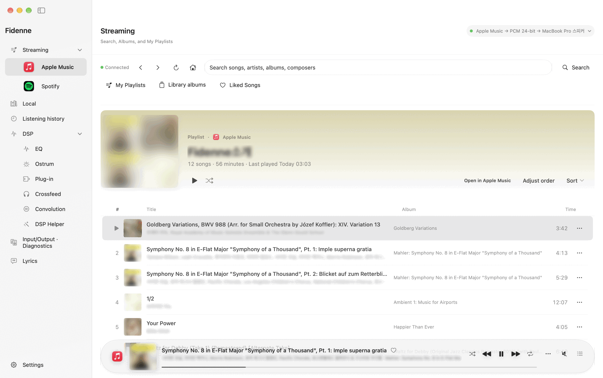
- Click one of Apple Music, Spotify or YouTube Music under Streaming in the sidebar (YouTube Music shows only when turned on).
- Search for tracks, artists and albums.
- Click a track and choose Play Now or Play Next.
- When you open a playlist or an album, Adjust order lets you drag track rows to change the order, and the Library button in the album header saves it to that service’s library. The order changes only inside Fidenne, and the service’s own playlist stays as it is.
Spotify search results are not mixed with other services; you see them separately by clicking the Spotify tab at the top of the results. If Spotify search does not work, check that you entered the key (Install 10 and 11). If YouTube Music shows “Not connected”, follow Install 12.
Use 6
Your Fidenne library and Local
Playlists are saved inside Fidenne, and tracks play from each service. The music files on this Mac gather on the Local page in the sidebar.
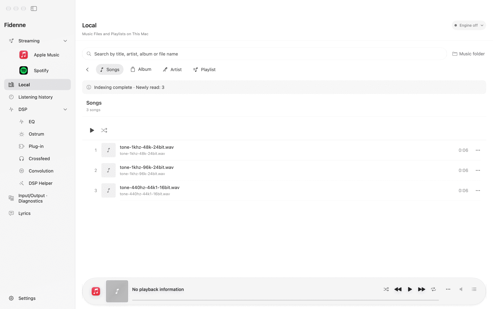
- Choose ⋯ (or right-click) at the end of a track row › Add to Playlist. The heart adds to the likes list.
- Use + New Playlist to name and create a new list.
- On the Local page, add a folder. Fidenne reads WAV · AIFF · FLAC · ALAC · AAC · MP3 · Opus, and never moves or changes the files themselves.
Even if you delete a list, the track files stay as they are. If a track disappears from a service, that row in the list may not play.
Use 7
Play Next and lyrics
When you open Album mode, the center column holds Play Next (the tracks that follow the current one) and Lyrics.

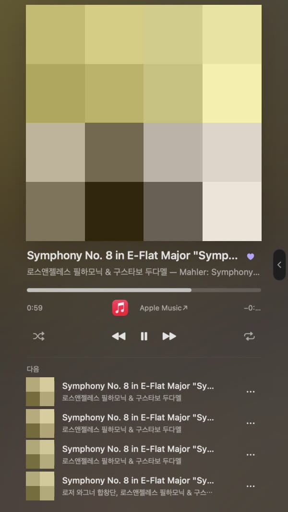
- Use the buttons below to switch between Play Next and lyrics. In the lyrics, the line being sung now is clear and lines fade as they get further away.
- You can link a lyrics file (LRC or TXT) to a track yourself, or adjust the timing a little at a time if the lyrics are early or late.
- If no lyrics show, click refresh (↻). A track that could not be found is not asked about again for 30 minutes.
The first time lyrics are looked up on the internet, you are asked for consent once. Only the track title, artist, album and length are sent; sound and account information are not. If you do not agree, nothing is sent.
Use 8
Shape your sound
Open DSP (⌘4) in the sidebar. In the DSP group, EQ, Ostrum and Crossfeed are each a page of their own.
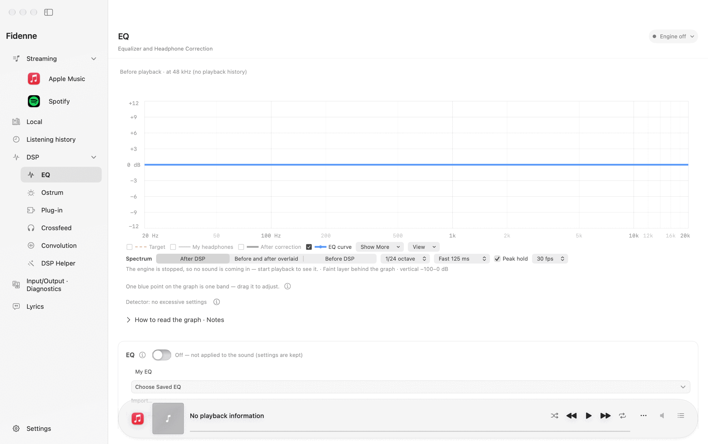
- Equalizer — adjusts the loudness of high and low sounds band by band. In Auto EQ, choose your headphones and a target and it sets things up for you.
- Ostrum — Fidenne’s own feature for shaping bass, presence and the width of the sound. You start from one of four starting points.
- Crossfeed — mixes a little of the left and right sound of headphones. Turn it on and off with the switch.
- When you change a value, it applies as it is, without saving. You hear it after a delay equal to the time the sound takes to pass through the filter and the output buffer, which can take up to a few seconds with a long filter or the “Stable” buffer. To keep it for the next launch, click Save (⌘S). If you do not save, it goes back when you quit and reopen the app.
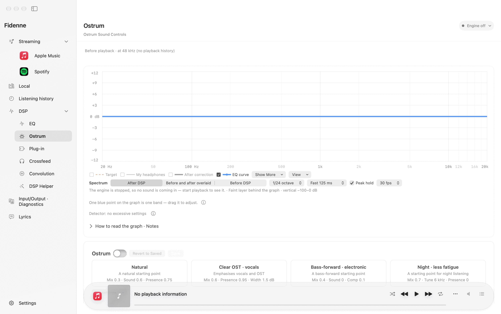

DSP works only when the sound passes through the engine. If you set PCM Direct, or use a device that accepts none of the supported rates between 44.1 and 768 kHz, the sound does not change, so see Use 1. If the sound gets too loud, a big EQ boost may be the reason, so lower it first.
Use 9
When you get stuck
If there is no sound, look up your symptom in the Troubleshooting guide. There are three things to check first.
- In the Playback Chain pill at the end of the header, check that the engine is on (green dot).
- Check that the volume on your DAC and amp is up.
- Check that the volume notice window is not sitting open.
- If it still does not work, open the menu Help › Create Diagnostics for a Problem Report…. If you agreed to “Diagnostic records for problem reports” at first-time setup, recording is already on, so create the bundle right after the problem happens and before you quit the app. If it was off, click Start Diagnostic Recording and leave it, and create the bundle the next time a problem happens. The bundle shows you its contents before sending.
- Send by Email opens your mail app with the address, subject and form filled in. If you use another mail service (such as Gmail), use Copy Email Form to copy the same content and paste it. Attach the bundle yourself. The app never sends anything for you.
For questions, write to fidenne.support@gmail.com. In the email, include your DAC and output method, and when you did what and what you heard. The app version and macOS version are already in the form and the bundle. The bundle contains times, services, rates and random track covers; track titles, artists and albums are masked. Send the diagnostics bundle by email only, and do not post it in a GitHub issue.
When you delete the app, first click Remove… for Fidenne Inlet under Input/Output · Diagnostics › Input and output devices, and then move the app to the Trash. If you only throw the app away, the Inlet device stays behind.